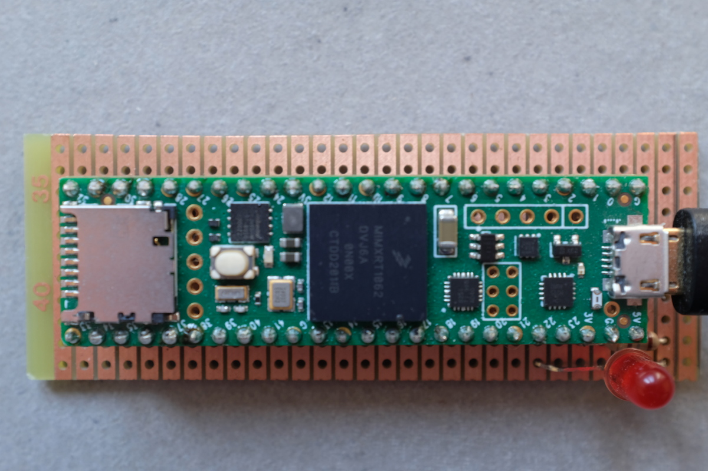
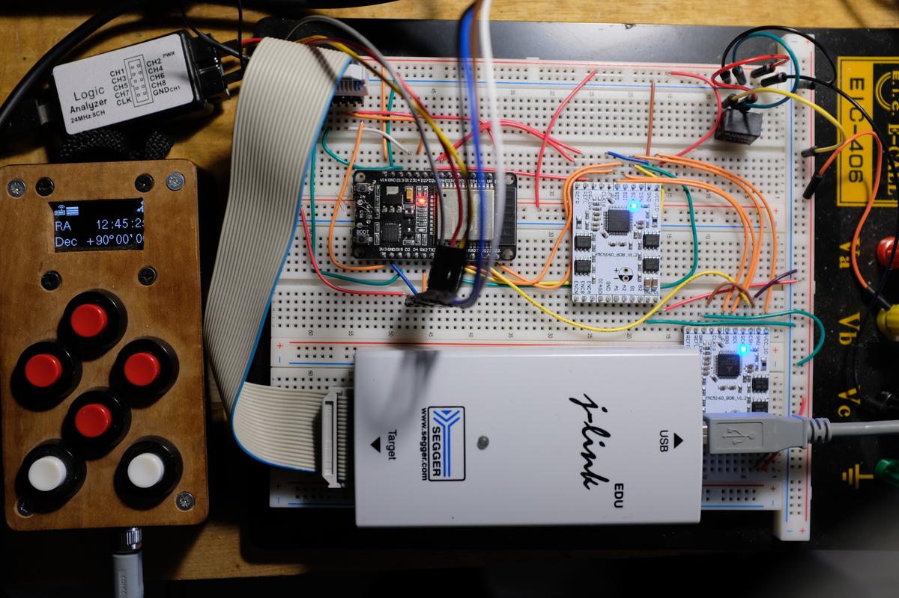
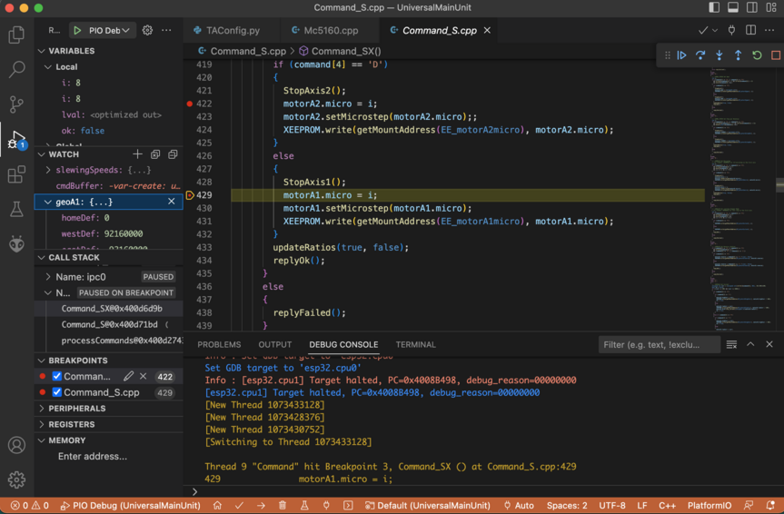
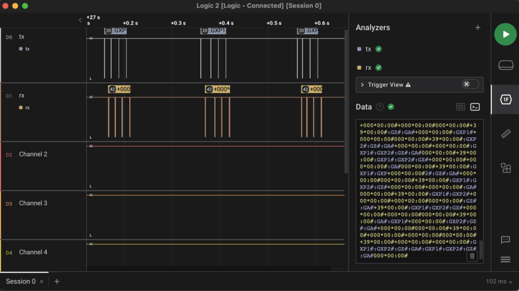
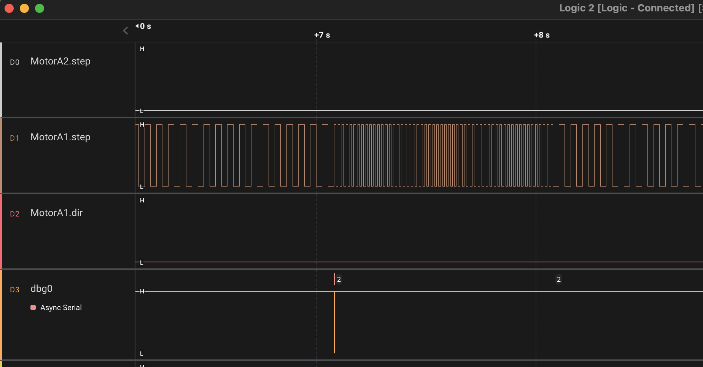
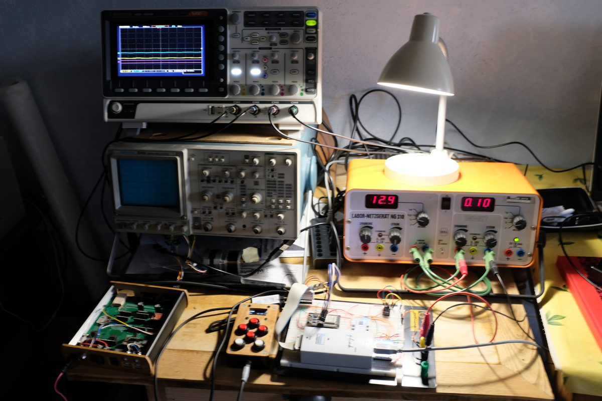

Introduction
This describes the platforms and tools for debugging the TeenAstro Main Unit software.
Debugging platforms
The simplest debug platform is a stand-alone processor like this Teensy4.1. I added a LED to display the error status, useful for testing limits. Obviously this is limited to simulation with Step/Dir drivers, since the SPI mode needs functioning TMC5160 hardware to read the motor positions.

An ESP32 with a breadboard adds JTAG (see below) and the capability of driving motors through 5160 BOB. An SHC can be connected to the serial port.

Debug tools
The ESP32 has JTAG support, which, together with a J-Link probe, allows the use of a full-featured debugger like VSCode. I can set breakpoints, watch variables and memory.

For tracing communications on serial ports between components (main unit, SHC, focuser etc.), a small logic analyzer like a Saleae (or clone) is very useful. Here the logic analyzer is setup to show UART activity in both directions.

This trace is obtained during a 1 second "West" guiding command with the StepDir driver. The RA motor Step frequency is increased.

Finally, an oscilloscope can be used for tracing low-level issues.
